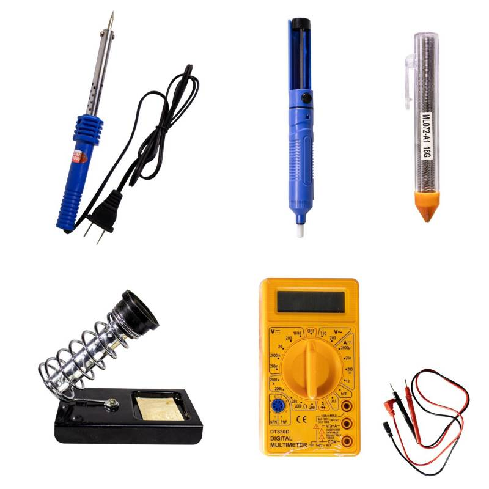

Herramientas para el mantenimiento de un dispositivo movil

La reparación de móviles es una tarea que suele ser complicada de no contar con los instrumentos necesarios. Es por este motivo que es importante invertir en ellos, ya que es preferible contar con varias opciones en tu trabajo a la hora de presentarse algún inconveniente. En esta ocasión traemos para ti las herramientas que resultan indispensables a la hora de cumplir tus objetivos, haciendo repaso de las más sencillas y las más actualizadas.
Top herramientas de mantenimiento de dispositivos mas comunes
- Pinzas:Representan una de las herramientas más importantes en la reparación de móvilesdebido a que permiten coger o tomar las piezas pequeñas, además de ser de gran ayuda en el proceso de soldadura de componentes que se encuentren a temperaturas muy altas y sean difíciles de tomar con las manos.
- Desarmadores:Son muy útiles para la etapa inicial de destapar el teléfono celular para hacerle mantenimiento, para hacer un cambio de carcaza o simplemente para la reparación de alguna pieza o el cambio de algún componente descompuesto. 
- Soldador:Dentro de las herramientas para la reparacion moviles pamplona es una de las más importantes para corregir algunas fallas, como por ejemplo la soldadura de piezas que se encuentren despegadas, o para el cambio de micrófonos o parlantes, entre muchas otras cosas de gran importancia.
- Fuente de voltaje:Hace posible el reseteo correcto de las baterías de los móviles, permitiendo también ejecutar su carga de voltaje. Además es útil para probar el funcionamiento de los mini motores vibradores.
- Multímetro:Es una de las herramientas más indispensables en la reparación de móviles, ya que permite realizar la verificación de distintos componentes, como el estado de los parlantes, continuidad entre las pistas, cargadores, baterías, fusibles, conectores, entre otros.
- Cables:Entre las herramientas de mayor utilidad destacan los cables de datos, ya que permiten realizar el flasheo de ciertos teléfonos, así como descargar aplicaciones. En las cajas de servicio como la smartclip o la seetool pueden encontrarse otros cables con la misma utilidad.
- Lavadora ultrasónica:Permite hacer el lavado del celular cuando estemos en presencia de que el dispositivo haya sido sumergido a algún líquido como las gaseosas o incluso haya caído al inodoro por descuido, o se encuentre sulfatado por exposición prolongada a la humedad.
- Estación de soldaduraEs útil en el caso de que se abran los circuitos internos producto de una caída o incluso puedan perder contacto, siendo necesaria la soldadura para corregir la falla.